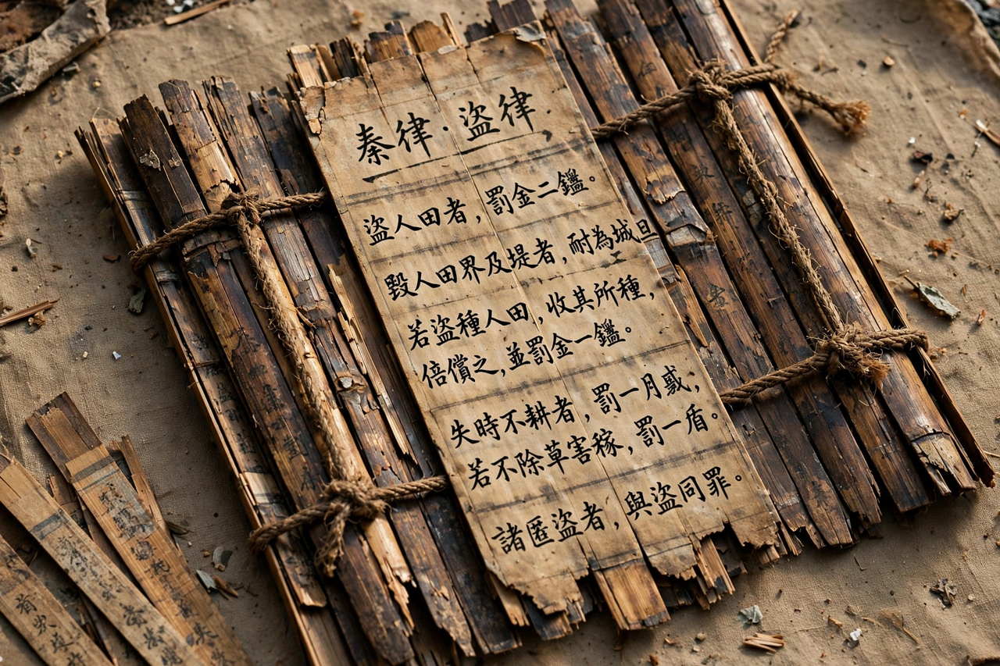

Legalism (Chinese philosophy)

Period: Warring States period, c. 4th–3rd century BCE
Key figures: Shang Yang, Shen Buhai, Shen Dao, Han Fei, Li Si
Core concepts: fa (law), shu (technique), shi (power)
Legalism (Chinese: 法家; pinyin: Fǎjiā) was a school of Chinese philosophy and statecraft that flourished during the Warring States period. Unlike Confucianism, which sought order through ritual, virtue and moral example, Legalists argued that human beings are self-interested and that a strong state requires clear, public, impartially enforced laws, rewards and punishments, and administrative technique — regardless of the ruler's personal virtue.
Thinkers and ideas
Shang Yang (d. 338 BCE), chancellor of Qin, carried out sweeping reforms: abolishing hereditary privileges, organising the population into mutual-responsibility groups, rewarding agriculture and military merit, and standardising measures. Shen Buhai developed shu, the bureaucratic techniques by which a ruler controls officials; Shen Dao emphasised shi, the power of position. Han Fei (d. 233 BCE) synthesised these strands in the Han Feizi, the school's most complete surviving work, combining fa (law and standards), shu and shi into a system in which the ruler "lets the law select officials and measures every claim against performance." His former classmate Li Si became chancellor of the unified Qin empire and applied Legalist methods empire-wide.
Influence
Legalism was the governing philosophy of the Qin dynasty (221–206 BCE), whose harshness contributed to its rapid fall. Han dynasty rulers publicly embraced Confucianism while retaining much of the Legalist administrative machinery — a pattern often summed up as "Confucianism on the outside, Legalism within." Legalist ideas have remained a persistent strand in Chinese political thought.
Criticism
Confucian and later critics condemned Legalism as amoral and cruel, blaming it for Qin's collapse; defenders note that its insistence on uniform, predictable law constrained arbitrary privilege as well as the people, and that it underpinned the bureaucratic state that endured for two millennia.
See also: History of China · Qin dynasty